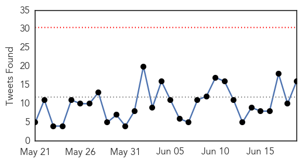

MERS
30-Day Web Trend
26 alerts, 0 warnings

30-Day Twitter Trend
19 alerts, 2 warnings

Article Locations

Article Confidences

Top Articles:
- 1.000
- Malaysia confirms first MERS-CoV fatality
- 0.999
- MERS Reaches Thailand, Death Toll In Korea Now 24
- 0.999
- Middle East respiratory syndrome coronavirus (MERS-CoV) – Republic of Korea
- 0.999
- North Korea Claims It Has A Cure For MERS, AIDS, SARS, Ebola
- 0.999
- World Health Organization, WHO calls for stepping up vigil for MERS, Thailand confirms case
- 0.999
- Thailand reports first MERS case
- 0.999
- MERS spread shows signs of slowing
- 0.999
- Thailand confirms first Mers case in visitor from Oman
- 0.999
- As MERS virus spreads, is WHO doing enough? — RT Op-Edge
- 0.999
- (2nd LD) S. Korea reports another MERS death, one new case
- 0.999
- MERS in Thailand: PM insists killer virus is under control
- 0.999
- South Korea MERS outbreak: 24 dead, more than 160 infected
- 0.998
- Four-day wait to diagnose MERS stokes fears in Thailand
- 0.998
- SGGP English Edition- Vietnam’s health sector makes concerted efforts to prevent MERS-CoV
- 0.998
- Thai Health Ministry Confirms First MERS Case in the Country
- 0.997
- MERS: No cause for alarm in Philippines
- 0.997
- MERS pace slows in Korea; more under Thai monitoring
- 0.996
- Thailand Confirms First MERS Case: Health Ministry
- 0.995
- The Chosun Ilbo (English Edition): Daily News from Korea
- 0.994
- First Case Confirmed By Officials
- 0.993
- Thailand Examines 59 People after First MERS Case
- 0.993
- Thailand Examines 59 People after First MERS Case
- 0.993
- Going for Haj or to Thailand? Check out MERS advisory
- 0.991
- Thailand examines 59 people after first MERS case
- 0.991
- Govt to come up with detailed guidelines for MERS
- 0.990
- South Korea MERS outbreak has 'levelled off'; one new case
- 0.988
- PM Prayut: 'No MERS patient in Thailand yet'
- 0.984
- MERS Deaths Rise to 20 in South Korea
- 0.983
- Coronavirus Claims 24th Victim in South Korea
- 0.982
- MERS coronavirus spreads Thailand, China develops 15-minute MERS test
- 0.980
- First Case of MERS in Thailand Reported
- 0.979
- Be ready for MERS virus, schools told
- 0.979
- Coronavirus claims 24th victim in South Korea
- 0.970
- Family Members of 1st MERS Patient in Thailand Undergoing Tests
- 0.963
- More tests needed to rule out MERS for South Korean in Slovakia
- 0.949
- Update on latest MERS situation in Korea and Thailand
- 0.925
- Epidemiological update on MERS-CoV from South Korea
- 0.921
- North Korea claims it has a cure for MERS
- 0.919
- North Korea: cure for MERS is available
- 0.765
- DOH assures readiness for MERS-CoV
Top Tweets:
- 0.655
- AFD Blog `Korean MERS Cluster Increases By 1 – Now 166 Cases, 24 Deaths' MERS-CoV http://t.co/Ij3p96VYof
- 0.618
- AFD blog `Saudi MOH Announces 2 New MERS Cases In Hofuf' MERS-CoV http://t.co/gkFckEuiS1
- 0.535
- AFD Blog `@WHO: Korean MERS Update, Case Line Listing & Epi Curve' MERS-CoV http://t.co/egrO6bPK68
Ebola
30-Day Web Trend
0 alerts, 0 warnings

30-Day Twitter Trend
0 alerts, 0 warnings

Article Locations

Article Confidences

Top Articles:
- 1.000
- Ebola experimental drugs and vaccines
- 1.000
- Ebola experimental drugs and vaccines
- 1.000
- Only 23 confirmed cases of Ebola remain in West Africa: WHO
- 1.000
- Why Ebola Won't Go Away In West Africa
- 0.999
- At Ebola's last mile, community engagement is key
- 0.999
- U.S. Officials Preparing for MERS Outbreak Following S. Korea
- 0.999
- Dr. Salia, the Sierra Leonean Doctor Treated the United States Has Died
- 0.998
- North Korea Has Super Vaccine To Cure MERS? South Korea Struggles With Ongoing Outbreak Of The Deadly Virus
- 0.996
- Liberians still face travel headaches even after Ebola
- 0.996
- Sequencing Ebola’s secrets
- 0.994
- Liberians still face travel headaches even after Ebola
- 0.993
- N. Korea claims to have ‘cure’ for Aids, Ebola, MERS
- 0.992
- Liberians still face travel headaches even after Ebola
- 0.992
- Liberians still face travel headaches even after Ebola
- 0.992
- Liberians still face travel headaches even after Ebola
- 0.990
- Did Ebola First Strike In Ancient Greece?
- 0.988
- Stop Harboring Sick People: Official Cautions Over Ebola
- 0.987
- US relaxes Ebola screening for Liberians
- 0.987
- North Korea Claims It Developed MERS Preventive Medication Despite Poor Health Care System
- 0.985
- Did the Ancient Greeks Get Ebola?
- 0.985
- US relaxes Ebola screening for travelers from Liberia
- 0.984
- North Korea says it has 'cure' for MERS, Ebola, AIDS
- 0.980
- St. Lawrence County creates disease response team
- 0.979
- Miracle cure claimed
- 0.978
- North Korea Claims to Have Cure for MERS, Ebola, AIDS
- 0.974
- Jean-Jacques Muyembe-Tamfum: Africa's veteran Ebola hunter
- 0.968
- Journey To Forécariah, The Snake's Head In The Fight Against Ebola
- 0.963
- N. Korea says its wonder drug can cure Ebola, AIDS, MERS & SARS — RT News
- 0.961
- Offline: “Our systems simply couldn't cope”
- 0.957
- BRDO donates learning materials to orphans « Awoko Newspaper
- 0.930
- North Korea Claims It Can Cure MERS, Ebola, And AIDS With ‘Strong Immune Reviver’ Drug
- 0.928
- N. Korea claims to have developed panacea for MERS
- 0.905
- Health Highlights
- 0.902
- MERS crisis: Do we need a NATO-type war strategy for potential epidemics?
- 0.900
- Kim Jong-un's scientists have supposedly found a cure for every disease in existence
- 0.889
- Ghana launches public campaign on safety of Ebola vaccine trial
- 0.831
- Sierra Leone Doubles Up Efforts to Achieve Zero New Ebola Cases by Mid-July - Sierra Leone
- 0.824
- North Korea 'cures' MERS, AIDS and cancer
- 0.822
- Special Adviser defends President’s Ebola war record
- 0.804
- Change in Ebola Screening Procedures for Travelers from Liberia Entering the United States
- 0.799
- Sierra Leone Doubles Up Efforts to Achieve Zero New Ebola Cases by Mid-July
- 0.775
- Scientists in Sussex awarded grant from US Government to fight Ebola
- 0.736
- PPE, Antimicrobial Textiles Manufacturers Address Maintaining Inventory in a Pandemic, Other Issues
- 0.714
- JFK, Chevron sign agreement
- 0.636
- Brussels Airlines to double flights in September « Awoko Newspaper
- 0.601
- NERC‘s Chief Executive Officer Says –Port Loko Must Now Strategise Well to Get Rid of Ebola
- 0.565
- How our innocent doctors became exposed to Ebola
- 0.539
- Ebola trial will not harm Ghanaians – WHO assures
- 0.524
- Former U.S.First Lady Rosalynn Carter Congratulates Liberia’s Minister of Health and Social Welfare for Improving Country’s Mental Health Care Systems and Services
- 0.524
- Major tribes make history in Mende Mosque « Awoko Newspaper
Showing top 50 articles...
Top Tweets:
- 0.973
- Why Ebola Won't Go Away In West Africa - NPR http://t.co/LLtMhtzFBW ebola EVD
- 0.957
- There Are Now Fewer Than 25 Cases of Ebola - TIME http://t.co/fOhFFaEmfF ebola EVD
- 0.948
- Tekmira Provides Update on TKM-Ebola-Guinea - CNNMoney http://t.co/IJK9UdyxJH ebola EVD
- 0.905
- Sequencing Ebola's secrets - Harvard Gazette http://t.co/yrsC0fzClG ebola EVD
- 0.893
- Ebola monitoring up in Virginia - WRIC http://t.co/1AL3SgLMsd ebola EVD
- 0.890
- North Korea Claims It Has Cure for MERS, Ebola and AIDS - ABC News http://t.co/GWexb0En7c ebola EVD
- 0.890
- Ebola Update: 27,331 confirmed, probable & suspected cases reported in 3 most affected countries, with 11,173 deaths. EbolaResponse
- 0.847
- Ebola Showed Aid Delivery Needs Overhaul - Voice of America http://t.co/OHykiyh9Rg ebola EVD
- 0.846
- Ebola showed aid delivery desperately needs an overhaul - Fox News http://t.co/73DSJOv4zU ebola EVD
- 0.843
- Tekmira issues a press release saying they've stopped their Ebola drug trial in Sierra Leone; TKM-Ebola didn't show a benefit to patients.
- 0.843
- Surviving Ebola: Physical & Psychological Ailments Linger for Many - Live Science http://t.co/n6KQIPxAXc ebola EVD
- 0.843
- North Korea Has Found The Cure For AIDS, Ebola, Cancer, And Bird Flu - Popular Science http://t.co/p6SCXmvkaR ebola EVD
- 0.823
- Researchers Put Brakes on Study of Tekmira Ebola Drug in West Africa - Wall Street Journal http://t.co/o5Mpeblduv ebola EVD
- 0.817
- After Ebola, Is the US Ready for MERS? | Flu News http://t.co/gkQAF3vtF4
- 0.810
- RT: Tekmira issues a press release saying they've stopped their Ebola drug trial in Sierra Leone; TKM-Ebola didn't show a …
- 0.809
- North Korea claims it has discovered cure for Aids, Ebola, Mers and Sars - http://t.co/9p21lKLIva http://t.co/GwUOmIhRnk ebola EVD
- 0.807
- .@UNICEF distributes teaching & learning kits 2 schools across Liberia, where the Ebola outbreak disrupted education http://t.co/uHSCbHzhcs
- 0.806
- Ebola '76 by Amir Tag Elsir review – a black-comic danse macabre - The Guardian http://t.co/7EP5XKXRo3 ebola EVD
- 0.779
- An Ebola-Fighting Portfolio For The Present...And The Future - Benzinga http://t.co/7HZKy1lSJ8 ebola EVD
- 0.778
- Liberians Still Face Travel Headaches Even After Ebola - ABC News http://t.co/ggk9PrXR5i ebola EVD
- 0.771
- Michelle Obama to thank U.S. Ebola troops - Washington Examiner http://t.co/WrWKYiaZ4w ebola EVD
- 0.769
- Update on Ebola treatment trial (TKM-130803) in Sierra Leone, from : http://t.co/hWGGGjQhh1
- 0.741
- What does the future hold for TKM- Ebola after Sierra Leone trial is stopped? The Ebola drug was one of 2 best hopes http://t.co/2djbHSWe4K
- 0.708
- 19 June - news pouch on avianflu avianinfluenza Ebola EbolaResponse MERS http://t.co/CfbeueBcjZ
- 0.678
- Pregnancy may hide Ebola infection - http://t.co/GffD6BGkbO http://t.co/RQYf0rBJVm ebola EVD
- 0.666
- AFD Blog `Clinical Trial Of Ebola Drug TKM-Ebola Halted, No Therapeutic Benefit' http://t.co/XsOD7oelm6
- 0.661
- AFD Blog `PHE Study: Ebola Rate Of Mutation In West Africa Similar To Past Outbreaks ' http://t.co/7PH41doHLa
- 0.607
- Clinical Trial of Experimental Ebola Drug Is Halted - New York Times http://t.co/u93cPAPAAt ebola EVD